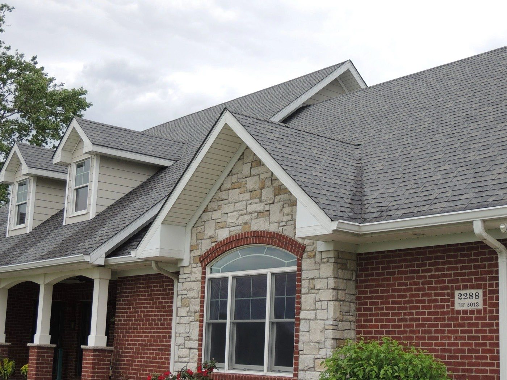
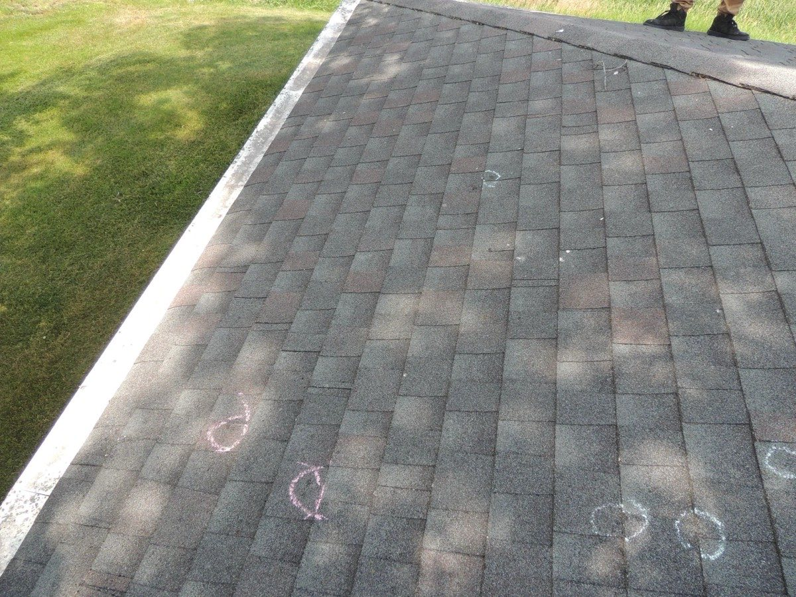
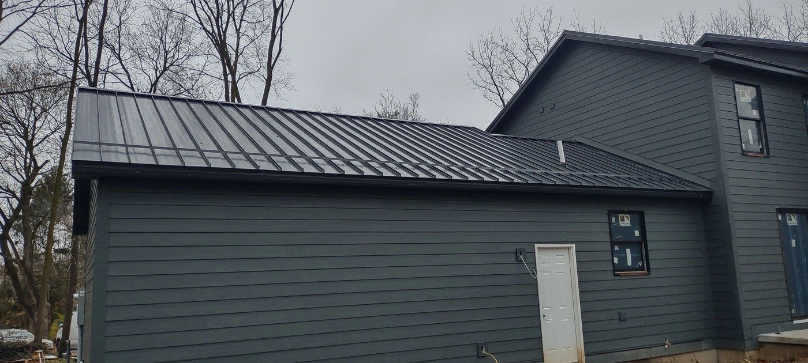
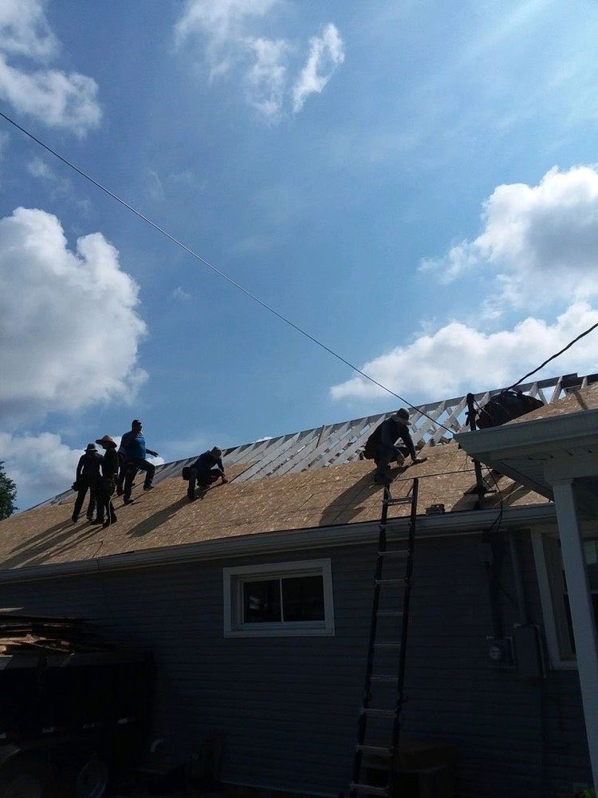
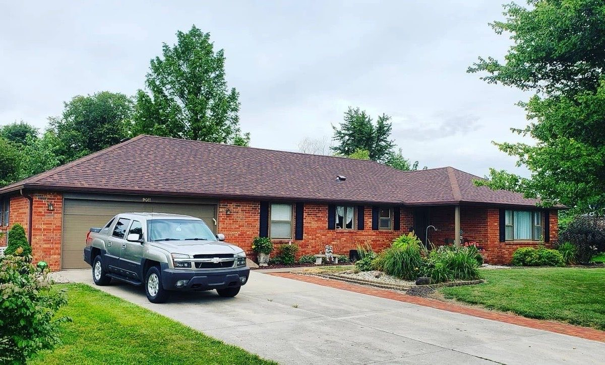
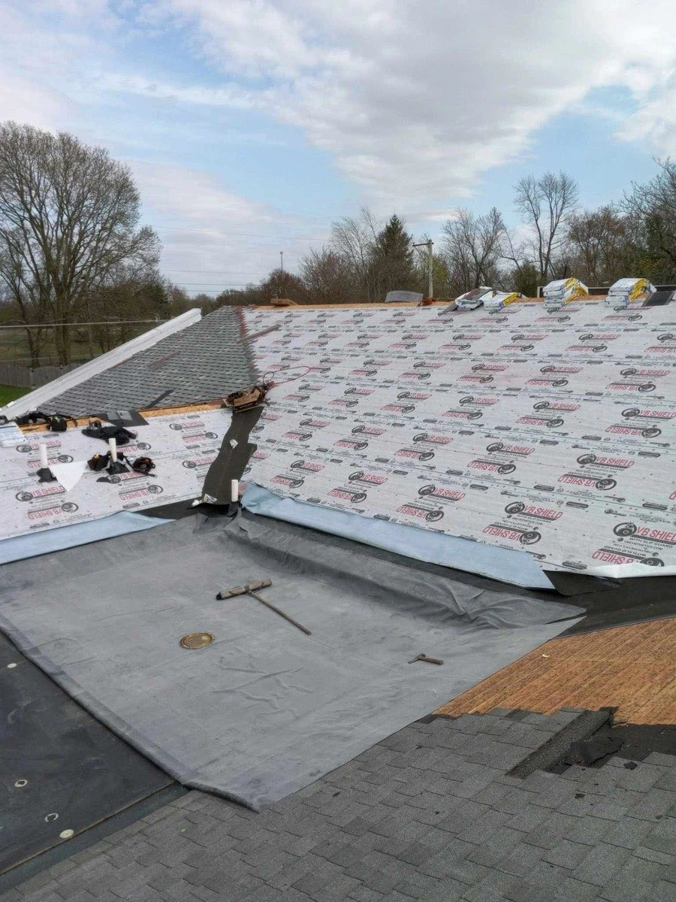
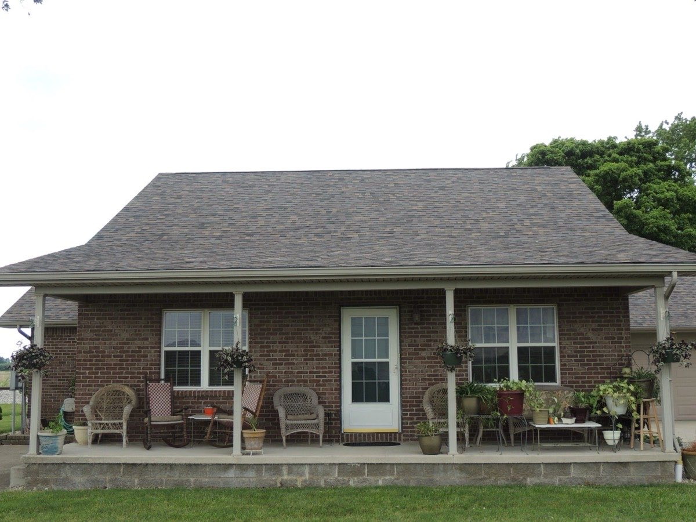
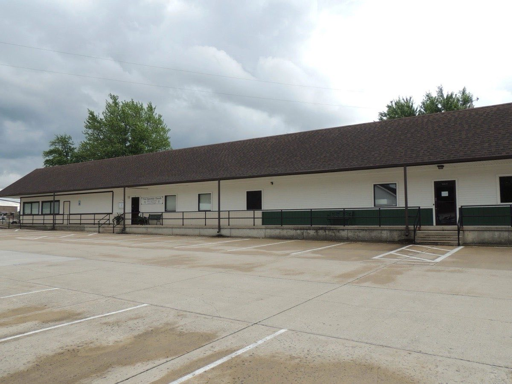
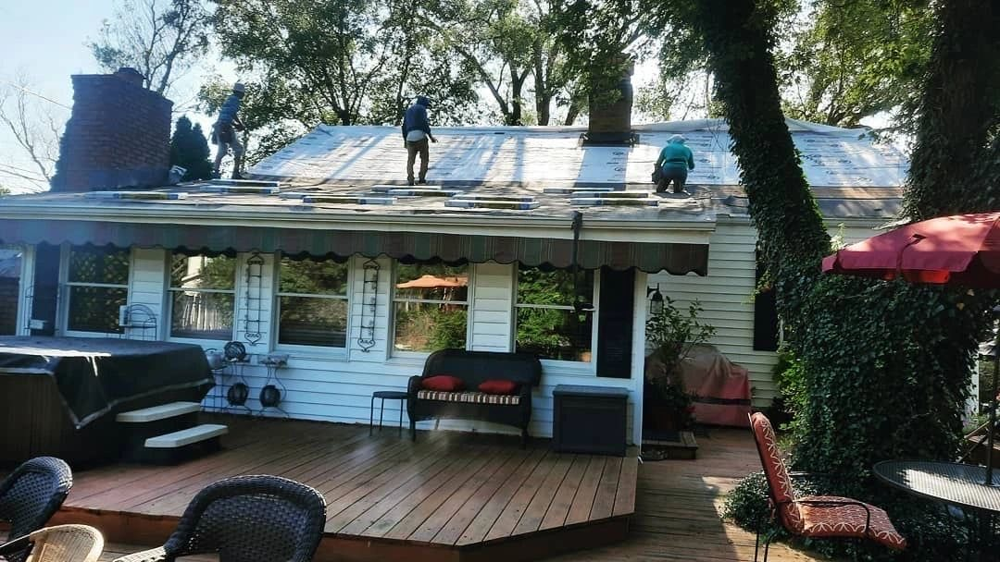
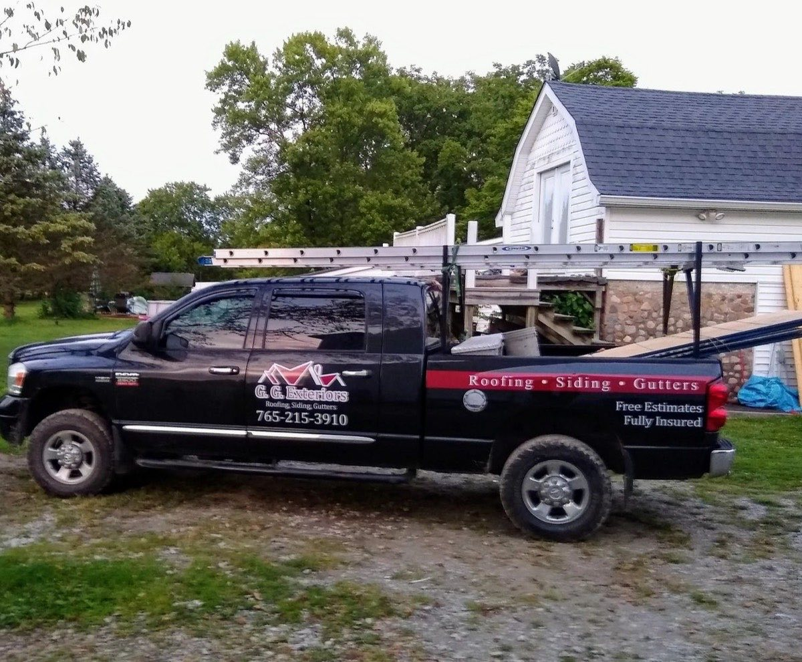

Family owned & operated · Central Indiana
Roofs thattake theIndianaweather.
Shingle and metal roofs, repairs, seamless gutters and siding from the Garner family in Pendleton. And crews who clean up after themselves, thoroughly.
01 / What we do
Top to bottom,
outside the house.
One local crew for the whole exterior: the roof over your head, the gutters that move the water off it, and the siding underneath.

Roofing
Installations, replacements and repairs. Shingle or metal, we do both. Repairs are done swiftly and carefully so a small leak never turns into a huge headache.
Roofing services
Seamless gutters
6 inch and 5 inch seamless aluminum gutters, formed to fit your house. Need new gutters? Not a problem.
Gutter services
Siding
Not in the market for a roof? Choose from vinyl, aluminum or wood siding. We have it all.
Siding services
02 / Storm damage
Hail. Wind.
Not to worry.
Whatever Mother Nature decides to throw at your house, you can count on us. We are experts at identifying storm damage and working with your insurance to make sure you get the most out of your policy.
Yearly inspections are essential to the life of your roof: at least once a year, and always after a severe storm.
Book a roof inspection03 / Roof day
What to expect
when we show up.
- 01
Early start
The crew arrives early in the morning. It keeps the job moving, and we try our best to finish within a day or two.
- 02
There will be noise
Tear-off and nailing are loud. Plan your day around it if you can.
- 03
Kids & pets inside
If you are home, keep children and pets indoors. Falling debris is the one thing we never take chances with.
- 04
Magnet sweep
We haul off the debris and comb the yard with a magnet. No stray nail in your tire, no felt paper in your flower beds.
- 05
Final walk
We check and inspect our work, and you decide if we did a stellar job.
04 / Our work
Real roofs.
Real Indiana houses.









05 / The family
Built on referrals
and repeat customers.
“G.G. Exteriors is in business to provide fairness in an industry that too often takes advantage of consumers.”Greg Garner, owner
Greg Garner started the company with a simple belief: getting a good roof should be easy, painless and above all affordable. More than three decades later he runs it with his son, Greg Garner Jr., and the business still grows the old way, through neighbors who tell neighbors.
- Customer satisfaction
- Value
- Quality
- Safety
- Individual dignity
- Ethics
06 / Customers
In their words.
Fast AND affordable!
“GG Exteriors really wrote the book on timely and professionally. I would hire them again in a heartbeat.”
Such great people
“I have never been so satisfied with customer service since GG Exteriors replaced my roof. Personable, and easy to talk to, Greg and his son are some of the best people.”
Repaired my roof
“I had a small leak in my bathroom and someone came out and repaired it on their day off. I can’t thank GG Exteriors enough for helping me out.”
07 / Questions
Straight
answers.
Can’t find yours? Email ggexteriors88@gmail.com or call Greg at 765-215-3910.
Do you offer free estimates?
Yes. Call (765) 215-3910 or send the estimate form below and we will get back to you.
How often should I get my roof inspected?
At least once a year, and always after a severe weather event.
What are the signs my roof needs to be replaced?
Missing shingles, water stains inside the home, or exposed roof components that look out of place. If you see any of these, give us a call: it more than likely means the roof needs replacing.
What should I do if I have a leaky roof?
Contact G.G. Exteriors right away for a repair, before a small leak turns into damage inside your home.
Do you install shingle or metal roofs?
Both. We install and repair shingle roofs and metal roofs.
Why does my standing seam metal roof look wavy?
That is called “oil canning.” It can make a metal roof look wavy or distorted at certain times of day. It can happen with any metal used in construction and is completely normal, and there are steps that help avoid it. Ask us when you plan your roof.
How long does a roof replacement take?
We try our best to finish within a day or two. Expect the crew early in the morning, and expect noise.
Can you help with storm damage and insurance?
Yes. We identify hail and wind damage and work with your insurance to help you get the most out of your policy.
08 / Free estimate
Let’s look
at your roof.
- Greg Garner, owner · call(765) 215-3910
- Greg Garner Jr., co-owner(765) 283-4580
From Bloomington to Richmond: Pendleton, Anderson, Fortville, Greenfield, Kokomo, Marion, Zionsville and many more Central Indiana towns.